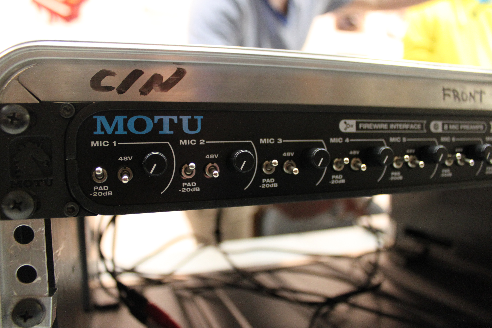
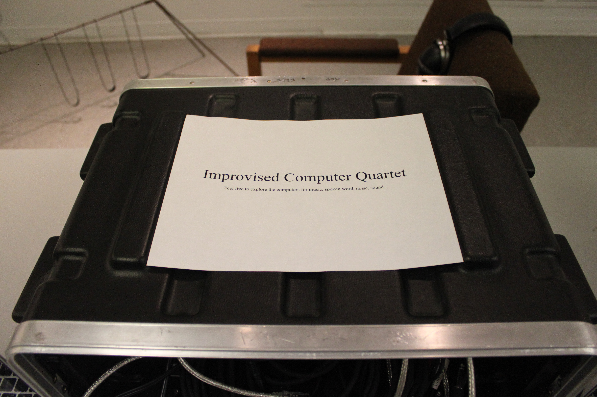
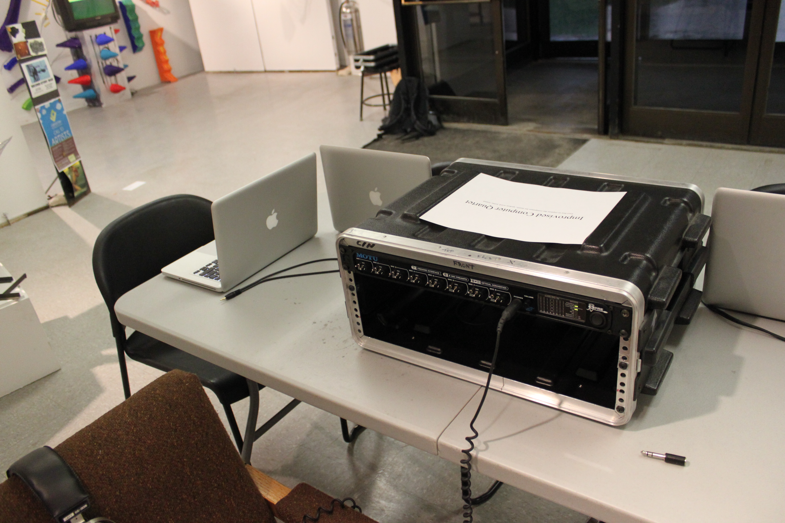

Interactive Installation
2011
Processing
Arduino
Custom hardware
Interactive
Four interactive computer-driven instruments, designed to be played simultaneously or independently. Each station invites a participant to engage through physical interaction — pressing, pulling, moving — and receives a sound in return, shaped in real time by the input.
The "quartet" framing suggests performance: four voices that can converge into something improvised and whole, or operate in isolation. The piece investigates how much musical intention can emerge from non-musicians given the right constraints.


